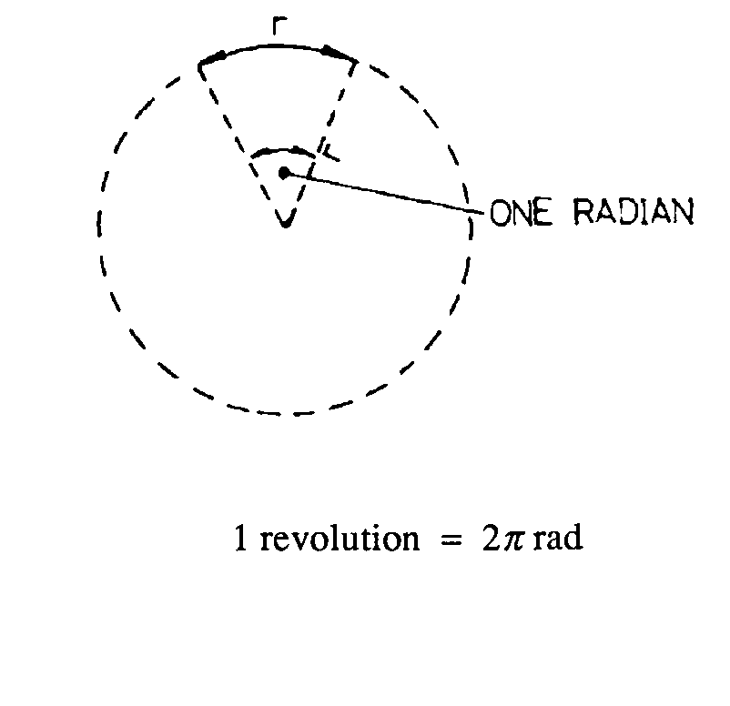

3 Kinematics
3.1 Objectives
- Recall
- Practice
3.2 Linear Motion Definitions
\(\textbf{Speed} (v)\): The scalar measure of the rate of change of distance. Mathematically, \[ v = \frac{d}{t} \] where (d) is distance and (t) is time.
\(\textbf{Velocity} (\vec{v})\): The vector measure of the rate of change of displacement. It is given by: \[ \vec{v} = \frac{\Delta \vec{x}}{\Delta t} \] where \(\Delta \vec{x}\) is the displacement vector and \(\Delta t\) is the time interval.
\(\textbf{Acceleration} (\vec{a})\): The rate of change of velocity with respect to time. It is defined as: \[ \vec{a} = \frac{\Delta \vec{v}}{\Delta t} \]
3.3 Equations of Motion (Constant Acceleration)
\[ \vec{v} = \vec{u} + \vec{a}t \]
\[ \vec{s} = \frac{\vec{u}+\vec{v}}{2}t \]
\[ \vec{s} = \vec{u}t + \frac{1}{2}\vec{a}t^2 \]
\[ \vec{v}^2 = \vec{u}^2 + 2\vec{a} \cdot \vec{s} \]
where:
- \(\vec{u}\): Initial velocity
- \(\vec{v}\): Final velocity
- \(\vec{s}\): Displacement
- \(\vec{a}\): Acceleration
- \(t\): Time
3.4 Angular Motion Definitions
\(\textbf{Angular Displacement} (\theta)\): The angle through which an object rotates, measured in radians.

\(\textbf{Angular Velocity} (\omega)\): The rate of change of angular displacement. Mathematically: \[ \omega = \frac{\Delta \theta}{\Delta t} \] \[ \omega (rad/s) =2\pi n \:where\:n=speed\:in\:rev/s \]
\(\textbf{Angular Acceleration} (\alpha)\): The rate of change of angular velocity with respect to time: \[ \alpha = \frac{\Delta \omega}{\Delta t} \]
3.5 Equations of Angular Motion (Constant Angular Acceleration)
\[ \omega_2 = \omega_1 \mp \alpha t \]
\[ \theta = \frac{\omega_1+\omega_2}{2}t \]
\[ \theta = \omega_1 t \mp \frac{1}{2}\alpha t^2 \]
\[ \omega_2^2 = \omega_1^2 \mp 2\alpha \theta \]
where:
\(\omega_1\): Initial angular velocity (rad/s)
\(\omega_2\): Final angular velocity (rad/s)
\(\theta\) Angular displacement (rad)
\(\alpha\): Angular acceleration (rad/s2)
\(t\): Time (s)
3.6 Relation Between Linear and Angular Motion
The relationship between linear and angular motion is described by the following equations:
\(s = r \theta\) (linear displacement \(s\) and angular displacement \(\theta\)).
\(v = r \omega\) (linear velocity \(v\) and angular velocity \(\omega\)).
\(a = r \alpha\) (linear acceleration \(a\) and angular acceleration \(\alpha\)).
3.6.1 Variables
\(v\): Linear velocity, the rate of change of linear displacement \((v = \frac{ds}{dt})\).
\(a\): Linear acceleration, the rate of change of linear velocity \((a = \frac{dv}{dt})\).
\(s\): Linear displacement, the distance moved along the circular path.
\(r\): Radius of the circular path.
\(\omega\): Angular velocity, the rate of change of angular displacement \((\omega = \frac{d\theta}{dt})\).
\(\alpha\): Angular acceleration, the rate of change of angular velocity \((\alpha = \frac{d\omega}{dt})\).
\(\theta\): Angular displacement, the angle swept by the radius in radians.
3.7 Key Points
Linear motion is directly proportional to angular motion, with the radius (\(r\)) acting as the proportionality constant.
Units for the variables:
\(v\): meters per second \((m/s)\),
\(a\): meters per second squared \((m/s^2)\),
\(s\): meters \((m)\),
\(r\): meters \((m)\),
\(\omega\): radians per second \((rad/s)\),
\(\alpha\): radians per second squared \((rad/s^2)\),
\(\theta\): radians (\(rad\)).
3.8 Further Reading
Introduction in Russell, Jackson, and Embleton (2021) and SI units in Bolton (2021) for additional information.